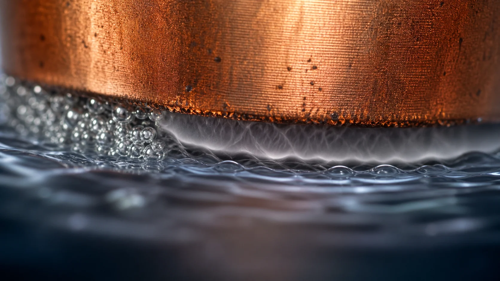
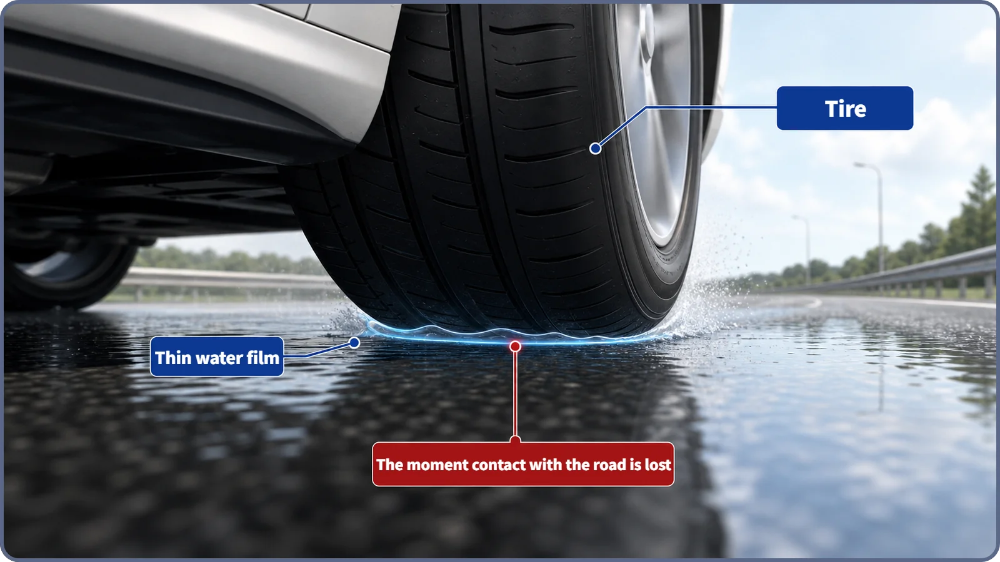
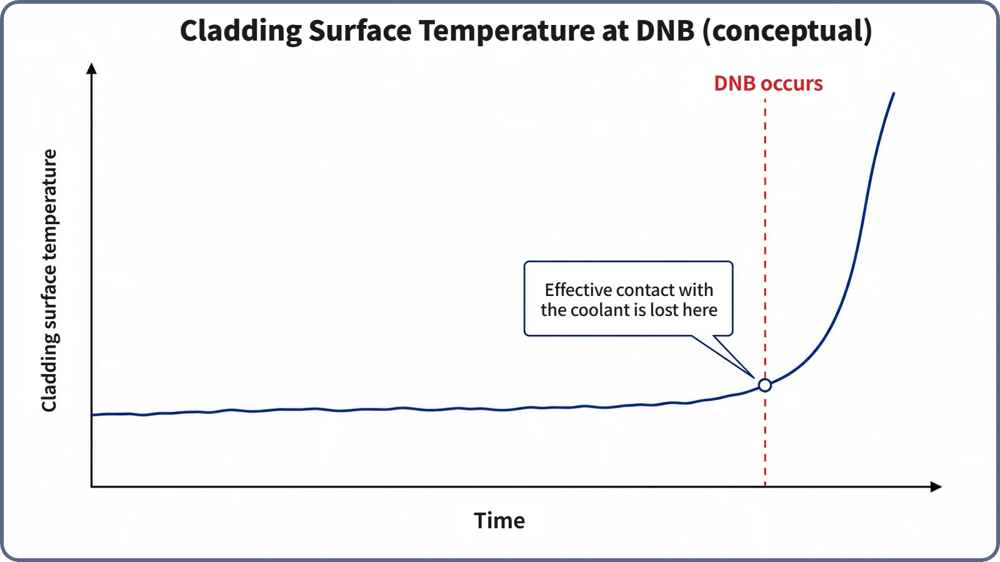

Heat Transfer & Thermal Hydraulics · 137
The Moment Your Tires Float on a Wet Highway — Why Reactors Must Avoid DNB
When a vapor film cuts the cladding off from its coolant, heat removal collapses while the fuel keeps making heat, so reactors are designed never to get there.

DNB (departure from nucleate boiling) is the event in which nucleate boiling on the fuel cladding suddenly collapses and a thin vapor film cuts off direct contact between the surface and the coolant. The fuel keeps making the same heat while the ability to remove it drops sharply, so the cladding temperature shoots up. Because the cladding is the first barrier holding in radioactive material, reactors are designed and operated with enough DNBR margin that DNB occurs nowhere in the core.
A thin film that cuts off contact
Ever driven a highway in the rain? Pass over a shallow puddle at around 100 km/h and the steering can feel strangely light for a split second. If the tread grooves can't push the water aside in time, a very thin film of water forms between tire and road, and the tire lifts slightly off the surface. That's hydroplaning.
While the tire grips the road, friction lets you steer and brake. Once the film separates them, steering and braking get no response. For that brief moment, the car is effectively out of control.
Something strikingly similar can happen inside a reactor. Between the surface of the cladding that wraps the fuel and the water (coolant) that cools it, a very thin film can suddenly cut off direct contact. That event is called DNB, departure from nucleate boiling. Let's look at what DNB is, and why reactor designers and operators work so hard never to meet it.

Until contact breaks, that contact is what keeps things cool
To understand DNB, start with the state just before it. In normal operation, the cladding surface is in constant direct contact with the coolant. Small bubbles form and break away, and water immediately refills their spots, tens to hundreds of times a second. This is nucleate boiling; the cycle keeps renewing the contact, so heat leaves very efficiently, like a tire on a dry road.
But as the surface heat flux (the heat that must leave per unit area) keeps rising, at some point bubbles form faster and in greater numbers than the surface can shed. They start merging with their neighbors before they can break away, until one thin but continuous vapor film covers the surface. The limit up to which nucleate boiling can be sustained is the critical heat flux (CHF); the event of actually crossing that limit, when nucleate boiling collapses, is DNB, the "departure from nucleate boiling." If CHF is the number that says where the boundary is, DNB is the name for actually crossing it.
What happens on the surface in that instant?
This is the hydroplaning moment. Once the vapor film covers the surface, direct contact between cladding and coolant is cut off. Steam (water as a gas) carries heat far worse than liquid water, so the film acts almost like insulation, and a vigorous heat passage turns instantly into a narrow, slow one.
The catch is that a fuel rod is a heat source, still producing heat by fission. DNB doesn't suddenly reduce the heat the fuel makes. The result is an imbalance: the heat produced stays the same while the ability to carry it away drops sharply. The only way to close that gap is for the surface temperature itself to rise, because pushing the same heat through a much poorer passage takes a much larger temperature difference between surface and coolant. So the cladding surface temperature shoots up sharply within a short time. This is often called a "boiling crisis." How fast and how high the temperature climbs depends on the heat flux, how long the condition lasts and when protective systems step in, so no specific numbers are given here.
A car regains its grip as soon as it leaves the puddle, but in a reactor this condition must never be left to persist. That's why reactors are designed and operated never to reach this moment at all.

So why avoid DNB so strictly?
Is a brief surface heat-up really such a big deal? The answer lies in the cladding's job. The cladding is the first of several barriers that keep radioactive material inside the fuel, separated from the coolant. If the surface temperature rises sharply and stays high, the cladding's mechanical properties can degrade and high-temperature reactions can speed up, creating conditions that threaten the integrity of that barrier. (The exact duration and temperature that separate harmless from damaging depend on fuel design and analysis methods, so no quantitative criterion is given here.)
So nuclear plants treat DNB not as an event to clean up after but as something to prevent from ever happening. The margin between the actual heat flux at a spot in the core and the CHF at that spot is expressed by the DNBR (departure from nucleate boiling ratio):
DNBR = (critical heat flux at that spot) ÷ (actual heat flux at that spot)
A DNBR well above 1 means plenty of margin; the closer it gets to 1, the less margin there is; at 1, DNB occurs. The value at the spot with the least margin in the whole core is the minimum DNBR (MDNBR). Designers shape the core geometry, fuel loading and coolant flow so that this minimum margin is always sufficient, not only in normal operation but also during anticipated operational transients (abnormal but foreseeable situations). Operators keep power and coolant temperature, pressure and flow within set ranges, and if the margin starts to shrink, the protection system steps in automatically and ends the situation before DNB is reached. The specific MDNBR limits depend on the CHF correlation, reactor type and fuel design, so none are quoted here.
Telling DNB apart from its neighbors
- DNB and CHF: CHF is "the value of the boundary," DNB is "the event of crossing it." Two expressions for the same boundary, not two different phenomena.
- DNB and dryout: even among water-cooled reactors, the coolant's state differs. In a pressurized water reactor (PWR), where the coolant is mostly liquid, nucleate boiling collapses the DNB way: bubbles suddenly merge into a vapor film. In a boiling water reactor (BWR), where much of the coolant has already turned to steam, heat transfer worsens as the thin liquid film on the surface gradually dries out and disappears; that's dryout. The outcome (a surface-temperature jump) is similar, but the mechanism differs. This article focuses on DNB in the PWR context. (Some texts group both under "CHF phenomena"; the split is kept at the conceptual level here.)
- DNB and film boiling: film boiling is the state in which the whole surface is covered by vapor and heat transfer is poor; DNB is the moment of transition from nucleate boiling into it. State versus event.
- DNB and fuel damage: DNB occurring and fuel actually being damaged are different things. Still, reactor design and operation don't lean on the gap between them; the principle is to keep a conservative margin so DNB itself never occurs.
The short version
- DNB is the event in which nucleate boiling on the cladding suddenly collapses, a vapor film covers the surface, and direct surface-to-coolant contact is lost in an instant.
- CHF names the value of the boundary; DNB names the event of actually crossing it.
- After DNB, heat-removal ability drops sharply while the fuel's heat output stays the same, so the cladding surface temperature shoots up within a short time.
- If that temperature jump persists, it can threaten the cladding, the first barrier holding in radioactive material, so DNB is treated as an event that must be avoided.
- Using the DNBR margin, reactors are designed and operated so that DNB occurs nowhere in the core, in normal operation or in anticipated transients.